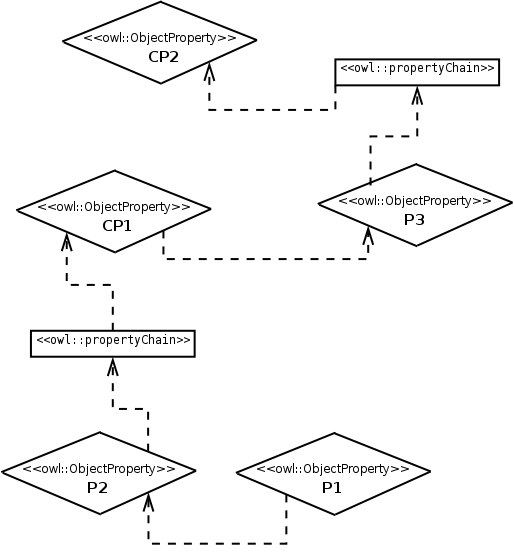
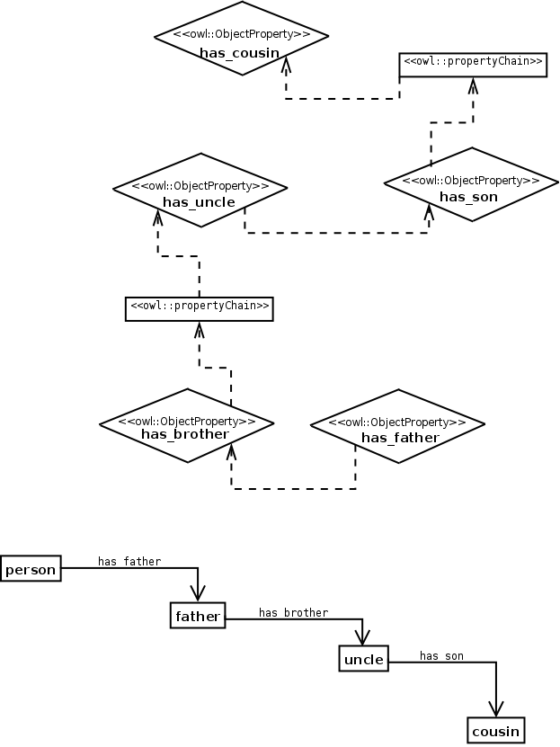

NAME: Composite Property Chain.
CLASSIFICATION: Domain Modelling.
MOTIVATION: A composite chain can be appreciated by the following example: the son of the brother of my father is my cousin. The same structure can be applied for modelling, for example, the sucessive modifications that a protein goes through. The key on the composite chain is that there are two chains, but one of them is composed by a relationship that will be inferred by the reasoner: the reasoner will first infer that the brother of my father is my uncle (first chain: father + brother = uncle), and then that the son of my uncle is my cousin (second chain: uncle + son = cousin). The property uncle is common to both chains.
AIM: To model a double chain of properties, i.e. two chains that link four individuals.
STRUCTURE:
SAMPLE:
ELEMENTS: This ODP is made by five object properties, grouped in two chains. Both chains have one object property in common: in one of them it is the head and in the other it is one of the precedents.
IMPLEMENTATION: The only main step of this ODP is to create both chains, and to link the appropriate individuals.
RESULT: The double chain is modelled. This allows for queries with the composite properties (e.g. has_uncle and has_cousin).
REFERENCES:
URL: http://odps.sourceforge.net/odp/owl/Domain_Modelling_ODP/Composite_Property_Chain.owl